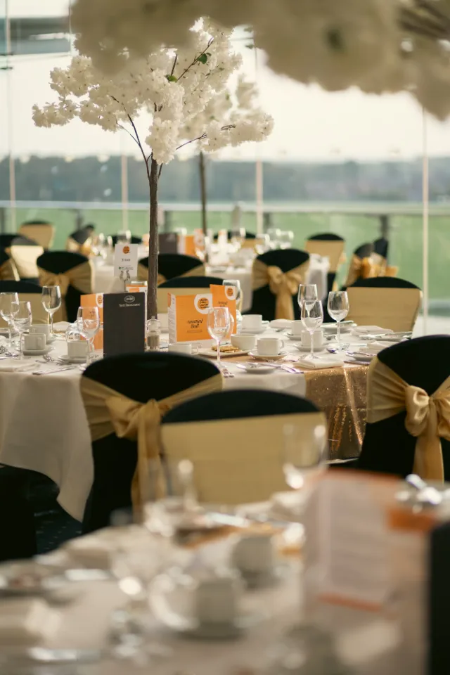
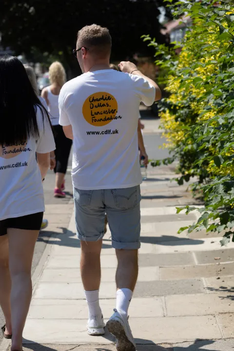
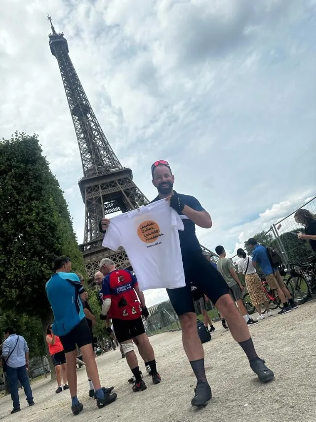
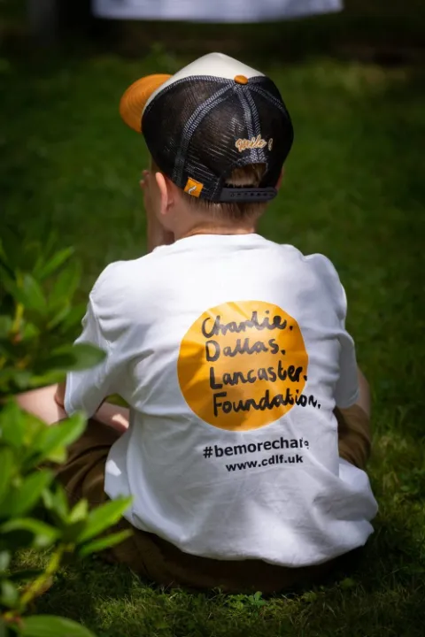
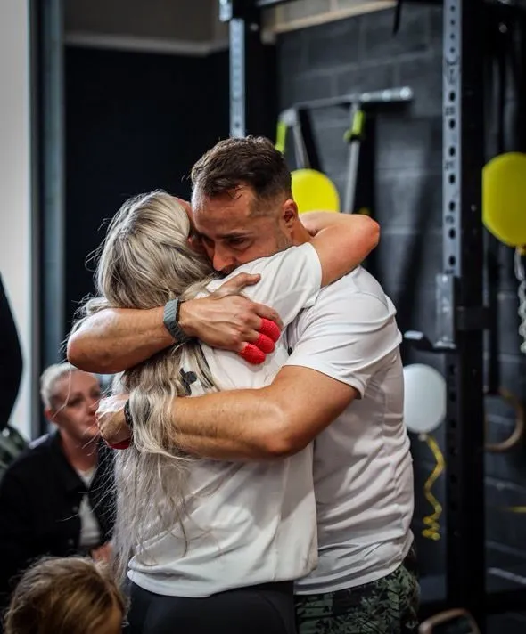
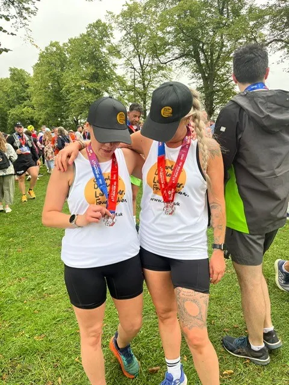

October 2023 and November 2024
Our annual ball
An evening at the Ebor Suite, York Racecourse. 180 guests came in 2023; in 2024, nearly 250 people raised £24,000.
23 May to 23 June, every year. Charlie's birthday is 23 June.
Our largest event. Together, we cover a mile for each life lost to suicide the year prior. A number that is so difficult to try and understand.
It brings a feeling of togetherness, something Charlie always created when he was around people. Anyone can get involved.
Want to raise money while you walk? Set up a JustGiving page.
What Charlie's army has achieved, as reported each year.
Covered between 23 May and 23 June.
The walk ended on what would have been Charlie's 40th birthday.
The third A Mile a Life: 280 people took part, logging around 800 activities a week.
A Mile a Life began in 2021, the year the foundation launched.
Our film about A Mile a Life and the people who walk it.






In the news: Persimmon Homes, 2023 and The York Press.
We run several events throughout the year. Follow us on Instagram and Facebook to hear about the next one.

An evening at the Ebor Suite, York Racecourse. 180 guests came in 2023; in 2024, nearly 250 people raised £24,000.

Mark Karvounis rowed 41 miles for Charlie's birthday, joined by the community and local businesses, and raised £7,296.

Charlie's little sister Alex and her best friend Emma ran the York 10k to raise awareness for mental health, flying Charlie's flag.